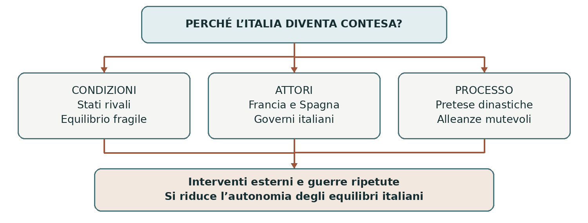

1494–1516
Le prime guerre d’Italia
Tra la fine del Quattrocento e l’inizio del Cinquecento la penisola italiana divenne il terreno di confronto delle maggiori monarchie europee. Le spedizioni di Carlo VIII e Luigi XII mostrarono la fragilità dell’equilibrio fra gli Stati italiani. Le alleanze cambiarono più volte e aprirono una lunga stagione di guerre, destinata a concludersi soltanto nel 1559.
0. Domanda generatrice
Perché gli Stati italiani, ricchi e culturalmente vivaci, non riuscirono a impedire che le monarchie straniere decidessero gli equilibri della penisola?
In sintesi La ricchezza economica non garantiva una difesa comune. Per capire la crisi bisogna partire dal sistema politico italiano del Quattrocento.
1. Il mondo precedente
La pace di Lodi del 1454 aveva favorito un equilibrio fra Milano, Venezia, Firenze, Stato della Chiesa e Regno di Napoli. Nessuno di questi Stati doveva diventare tanto forte da dominare gli altri. Diplomazia e alleanze contenevano le rivalità, senza eliminarle. Lorenzo de’ Medici contribuì a questo sistema fino alla morte, nel 1492.
Francia e monarchia spagnola disponevano di risorse territoriali e militari più ampie. I loro sovrani avanzavano pretese dinastiche sui domini italiani, utili anche a giustificare conquiste strategiche. L’Italia era divisa politicamente, ma i suoi governanti agivano secondo interessi propri: invitare una potenza straniera poteva sembrare un modo per prevalere sui rivali locali.
In sintesi L’equilibrio italiano dipendeva da accordi mutevoli. L’intervento francese trasformò una competizione regionale in un conflitto europeo.
2. Le fratture
Nel 1494 Carlo VIII scese in Italia rivendicando il Regno di Napoli come erede dei diritti angioini.
Ludovico il Moro, signore di Milano, favorì inizialmente l’impresa contro la dinastia aragonese di Napoli.
Altri governi trattarono con il re o cercarono di salvare i propri interessi: parlare di semplice indifferenza
nasconde queste scelte.
A Firenze fu Piero de’ Medici, figlio di Lorenzo, a concedere ai francesi condizioni giudicate umilianti.
La sua espulsione nel novembre 1494 consentì la restaurazione della repubblica. Il domenicano Girolamo
Savonarola ne influenzò la vita politica e religiosa con un progetto di riforma morale; incontrò però forti
opposizioni e fu condannato a morte nel 1498.
In sintesi L’avanzata francese provocò crisi interne e rese evidente il rischio di un predominio esterno. Le posizioni degli attori cambiarono quando cambiò la minaccia.
3. Attori, gruppi e conflitti
Le alleanze non dividevano stabilmente italiani e stranieri. Ogni governo cercava sicurezza, territori e vantaggi dinastici; città e popolazioni dovevano sostenere passaggi di eserciti, prelievi e violenze.
| Attori | Obiettivi e interessi |
|---|---|
| Carlo VIII e Luigi XII | Affermare diritti dinastici e accrescere la potenza francese in Italia. |
| Milano e Venezia | Proteggere o ampliare i propri domini, anche alleandosi con monarchie esterne. |
| Papato | Difendere i territori pontifici e influire sull’equilibrio italiano; le scelte cambiano da un papa all’altro. |
| Ferdinando il Cattolico | Impedire un predominio francese nel Mezzogiorno e controllare Napoli. |
In sintesi La ricerca della sicurezza del singolo Stato poteva indebolire l’equilibrio complessivo. Questo meccanismo spiega i rovesciamenti delle alleanze.
4. Il processo storico
Carlo VIII conquista Napoli e poi si ritira
Carlo VIII entrò a Napoli nel febbraio 1495, ma il suo successo allarmò potenze che inizialmente lo
avevano favorito o tollerato. Venezia, Milano, papato, monarchia spagnola e imperatore formarono una
lega antifrancese. Il re risalì la penisola e affrontò gli alleati a Fornovo, nel luglio 1495: riuscì a proseguire
verso la Francia, ma non conservò il controllo del regno meridionale.
Ferdinando II d’Aragona, detto Ferrandino, recuperò il trono napoletano con aiuti esterni, che comportavano concessioni e dipendenze. Il ritiro francese non ristabilì quindi il precedente equilibrio: aveva mostrato quanto le dispute italiane fossero ormai legate alle monarchie europee.
Luigi XII fra Milano e Napoli
Divenuto re nel 1498, Luigi XII rivendicò Milano attraverso la nonna Valentina Visconti. Nel 1499
conquistò il ducato; nel 1500 Ludovico il Moro, dopo un breve ritorno, fu catturato. L’impresa era stata
preparata con accordi: Venezia ottenne territori, mentre Cesare Borgia ricevette appoggio francese ai
propri progetti.
Con Ferdinando il Cattolico Luigi concluse nel 1500 il trattato di Granada per spartire il Regno di Napoli.
Dopo la conquista, le divergenze sulla divisione provocarono una guerra fra gli alleati. Le vittorie spagnole
di Cerignola e del Garigliano nel 1503 condussero al riconoscimento del controllo spagnolo su Napoli
nel 1504, mentre Milano restava alla Francia.
Dalla lega di Cambrai alla Lega Santa
Nel 1508 la lega di Cambrai riunì contro Venezia Francia, imperatore, papato e Spagna. Dopo la sconfitta veneziana di Agnadello del 1509, Giulio II temette l’eccessivo rafforzamento francese: nel 1511 promosse una Lega Santa antifrancese con Venezia e Spagna, cui si associarono altre forze. Nel 1512 i francesi persero Milano e a Firenze tornarono i Medici.
La situazione cambiò ancora: Francesco I, successore di Luigi XII, vinse a Marignano nel 1515 e
recuperò Milano. Gli accordi del 1516 lasciarono temporaneamente Milano ai francesi e Napoli agli
spagnoli. Le prime guerre avevano trasformato la penisola in uno spazio conteso, senza stabilire un assetto
durevole.
In sintesi Le coalizioni cercavano di frenare chi appariva più forte, ma favorivano nuovi interventi. Per comprendere la crisi occorre leggere insieme pretese dinastiche e rapporti di forza.
Lo snodo decisivo
1495: anche Milano passò dall’apertura alla Francia alla lega antifrancese. Il cambiamento mostra che l’alleanza era uno strumento per difendere interessi, non un’appartenenza immutabile.
5. Le fonti in dialogo
Le pretese dinastiche come fonte politica
Tipologia di fonte: genealogie e documenti diplomatici con cui i sovrani giustificavano le loro rivendicazioni. Per Luigi XII il riferimento era la discendenza da Valentina Visconti. Questi argomenti erano rivolti alle corti, ai giuristi e ai possibili alleati.
Contenuto — sintesi didattica: La parentela con i Visconti forniva al re francese un titolo per rivendicare Milano. Il diritto ereditario diventava così un linguaggio con cui presentare come legittima un’espansione territoriale.
Interpretazione e limiti: Un legame genealogico non dimostra che una conquista fosse inevitabile o riconosciuta da tutti. Per capire perché avvenne nel 1499 servono anche accordi diplomatici, risorse militari e debolezze degli avversari.
Domanda di lettura: Perché una pretesa dinastica può esistere da tempo e trasformarsi in guerra soltanto in un momento preciso?
Approfondimento documentario e storico — Treccani, Luigi XII
In sintesi Le giustificazioni dei protagonisti vanno confrontate con le condizioni che rendevano possibile agire. Da queste scelte derivarono conseguenze durature.
6. Conseguenze e nuovo assetto
Milano e Napoli divennero obiettivi centrali della competizione franco-spagnola. Alcuni Stati italiani conservarono autonomia e capacità di iniziativa, ma dovettero confrontarsi con potenze in grado di mobilitare risorse maggiori. Le guerre colpirono anche economia e popolazioni attraverso requisizioni, assedi e instabilità.
La futura egemonia spagnola non era già compiuta nel 1494: emerse dalle fasi successive, con Carlo V e Filippo II, e fu confermata nel 1559. Le prime campagne aprirono il problema che quelle guerre avrebbero deciso.
In sintesi La penisola perse capacità di regolare da sola i propri equilibri. La conclusione riguarda quindi il rapporto fra divisioni interne e interventi esterni.
7. Conclusione
Gli Stati italiani non furono semplicemente passivi: le loro iniziative e rivalità contribuirono all’intervento delle monarchie. Il limite decisivo fu la difficoltà di trasformare interessi diversi in una difesa comune capace di durare.
Sintesi finale L’equilibrio di Lodi conteneva rivalità mai scomparse. Carlo VIII aprì le guerre nel 1494 e perse Napoli nel 1495. Luigi XII conquistò Milano ma fu sconfitto nel Mezzogiorno. Le leghe cambiarono composizione secondo le minacce percepite. Nel 1516 la competizione franco-spagnola restava aperta.
Per studiare e collegare
Coordinate essenziali
Spazio: Italia, soprattutto Milano, Firenze e Napoli; rapporti con Francia, Spagna e Impero. Periodo: 1494
–1516 per le prime fasi; 1494–1559 per l’intero ciclo delle guerre d’Italia.
Saperi irrinunciabili
1. La pace di Lodi del 1454 organizzò un equilibrio fra Stati italiani.
2. Carlo VIII rivendicava Napoli sulla base dei diritti angioini.
3. La discesa francese iniziò nel 1494.
4. A Firenze le concessioni furono opera di Piero de’ Medici.
5. Nel 1495 una lega antifrancese costrinse Carlo VIII a ritirarsi.
6. Luigi XII conquistò Milano nel 1499 e consolidò il dominio nel 1500.
7. L’accordo franco-spagnolo su Napoli si trasformò in conflitto.
8. Nel 1504 Napoli passò sotto controllo spagnolo.
9. Cambrai era diretta contro Venezia; la Lega Santa contro la Francia.
10. Marignano nel 1515 riportò temporaneamente Milano alla Francia.
Mappa concettuale

La frammentazione non spiega tutto: diventa decisiva quando si combina con scelte diplomatiche e risorse delle monarchie esterne.
Strumenti e attività
Linea del tempo ragionata
| Quando | Che cosa cambia |
|---|---|
| 1454 | Pace di Lodi e politica dell’equilibrio. |
| 1494–1495 | Spedizione di Carlo VIII, crisi fiorentina, conquista e perdita di Napoli. |
| 1499–1500 | Luigi XII conquista Milano e cattura Ludovico il Moro. |
| 1503–1504 | Vittorie spagnole e controllo del Regno di Napoli. |
| 1508–1512 | Da Cambrai alla Lega Santa; i francesi perdono Milano. |
| 1515–1516 | Marignano e nuovo equilibrio provvisorio. |
Vocabolario essenziale
Equilibrio. Sistema di rapporti volto a impedire il predominio di una potenza.
Pretesa dinastica. Rivendicazione di un territorio fondata su parentela e successione.
Lega. Alleanza fra Stati per un obiettivo politico o militare.
Egemonia. Posizione di prevalenza capace di condizionare altri Stati.
Attività di comprensione
1. Ricostruisci una causa di lungo periodo e una scelta politica che favorirono la discesa di Carlo VIII.
2. Confronta le spedizioni di Carlo VIII e Luigi XII per obiettivi, alleati e risultati.
3. Spiega in 12 righe perché la formazione di leghe non produsse una difesa italiana stabile. Usa due cambiamenti di alleanza.
Fonti e approfondimenti
Lezione di riferimento: «moderna.ppt», diapositive 1–2. I collegamenti seguenti permettono di leggere la fonte e approfondire i passaggi centrali.
Treccani — Luigi XII e le campagne italiane
Treccani — Italia, quadro storico